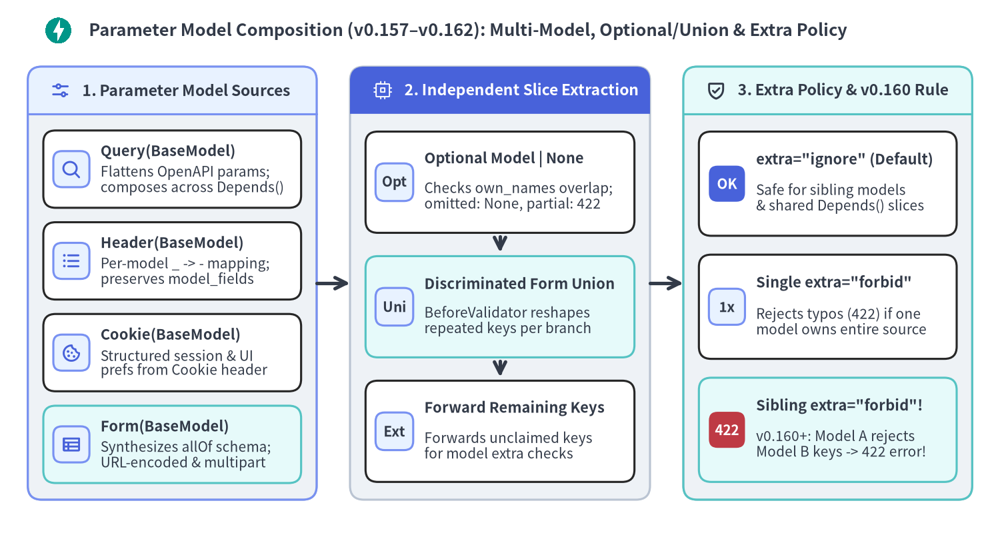

パラメータモデル合成・特殊型・スキーマ例示
FastAPI v0.157.0〜v0.162.2 は、Pydantic パラメータモデル（Query()・Header()・Cookie()・Form()）を合成・省略可能・判別共用体対応の抽出器へと拡張するとともに、JSON null と省略キーの厳密な区別、HTML チェックボックス Form の既定値解決、標準ライブラリ／Pydantic の拡張データ型、および 3 階層の OpenAPI 3.1 例示機構を統合します。

関連する HTTP 入力群を再利用可能な Pydantic BaseModel へ構造化することで、エンドポイントの関数署名を簡潔に保ちつつ、クエリ文字列・ヘッダ・Cookie・フォーム全体にわたる @model_validator の不変条件を一貫して適用できます。
1. パラメータモデルの合成（Query・Header・Cookie・Form）
FastAPI v0.157.0〜v0.162.2 では、fastapi/dependencies/utils.py の抽出エンジンが単一モデルの束縛から「エンドポイント引数と Depends() サブグラフを横断するモジュラー合成」へと拡張されています。
- 複数モデルの合成と OpenAPI フラット展開:
Query()・Header()・Cookie()では、_get_param_model()がModelとModel | Noneの双方を展開し、get_flat_params()が OpenAPI 上のフラットなパラメータ一覧を出力する一方、実行時は_request_param_model_to_args()が各モデルを独立して検証します。Form()では、_get_form_models()がルート引数とDepends()にまたがる複数のフォームモデルを OpenAPI のallOfリクエストボディスキーマへ合成し、実行時は_extract_form_model()が生のFormDataからモデル単位で独立抽出します。
- モデル単位の
Header(convert_underscores=...)分離:_request_param_model_to_args()はModel.model_fieldsのキャッシュを破壊的に書き換えることなくHeader()引数ごとにconvert_underscoresを解決するため、同一のBaseModelをHeader()・Header(convert_underscores=False)・Query()で安全に再利用できます。既定のloc_by_alias=Trueにより、検証エラーのlocには通信上のハイフン名（例:["header", "x-retry-attempt"]）が報告されます。
- 省略可能な
Model | None = Noneと判別共用体Form()モデル:Annotated[RangeModel | None, Query()] = None（またはHeader()・Cookie()・Form()）と宣言すると、リクエスト中にそのモデルのフィールド（またはエイリアス）が 1 つでも含まれるかが判定されます（own_names.intersection(received_params)/_is_form_model_supplied()）。該当キーが完全に省略された場合はUndefinedが渡されてNoneとなり、一部だけ送信された場合（例:max_centsなしの?min_cents=500）はモデル検証が走って不足フィールドに対する422が返ります（※= Noneを省略するとパラメータ自体は必須のままになります）。Annotated[WebhookForm | EmailForm | None, Form(discriminator="channel")] = Noneのような共用体フォームでは、_add_form_union_validators()が各分岐へBeforeValidator(_normalize_form_model)を注入し、同名キーの反復送信（list[str]と単一str）を分岐ごとの型定義に合わせて正規化します。
v0.160.0における兄弟モデル間のextra="forbid"規則:- クエリ文字列・HTTP ヘッダ・Cookie・フラットな HTML フォームは、それぞれ通信上で単一の名前空間を共有します。そのため
_request_param_model_to_args()および_extract_form_items()は、自モデル以外の残余キーを各パラメータモデルへ引き渡し、モデル自身のmodel_config["extra"]ポリシーに判定を委ねます。
- クエリ文字列・HTTP ヘッダ・Cookie・フラットな HTML フォームは、それぞれ通信上で単一の名前空間を共有します。そのため
| パラメータモデルの構成パターン | 推奨される extra 設定 |
FastAPI v0.160.0〜v0.162.2 における実行時挙動 |
|---|---|---|
単一の Query / Cookie / Form モデルが名前空間を独占 |
extra="forbid" または "ignore" |
クライアントの未定義キーやタイポを 422 extra_forbidden で厳格に拒否可能 |
同一箇所に複数の兄弟モデル または モデル＋スカラー引数／Depends() を併用 |
extra="ignore"（Pydantic 既定） |
各モデルが自身の担当キーのみを検証。extra="forbid" を付けると Model A が Model B の正当なキーを未定義キーとみなして 422 で拒否するため要注意 |
Header() パラメータモデル |
extra="ignore"（事実上必須） |
クライアントが常時送信する標準ヘッダ（host・user-agent・accept 等）が extra="forbid" では 422 となるため |
[!WARNING] 複数のモジュラーな
Query()やForm()スライスに対して未知キー拒否（extra="forbid"）を効かせたい場合は、同一ルートに複数のextra="forbid"引数を並べるのではなく、Pydantic の多重継承（class CombinedQuery(PaginationParams, SortParams): model_config = ConfigDict(extra="forbid")）で単一モデルに統合してください。またfrom __future__ import annotations環境下でルート登録時にBaseModel判定を確実に解決させるため、パラメータモデルは関数ローカルではなくモジュールスコープに定義してください。
複数 Query モデル・Optional Header/Cookie・判別共用体 Form の統合
以下の検証済みアプリケーションは、Depends() 経由の共通ページネーションモデルと省略可能な Query()・Header()・Cookie() モデルの合成、単一モデルでの extra="forbid" カーソル検証、および判別共用体 Form(discriminator="channel") を統合しています。
from typing import Annotated, Any, Literal
from fastapi import Cookie, Depends, FastAPI, Form, Header, Query
from pydantic import BaseModel, ConfigDict, Field, model_validator
app = FastAPI(title="Parameter Model Composition API", version="1.0.0")
class PaginationParams(BaseModel):
# Keep default extra="ignore" when composing multiple sibling models!
limit: int = Field(20, ge=1, le=100, description="Maximum rows per page")
offset: int = Field(0, ge=0, description="Zero-based row offset")
sort: Literal["recent", "amount"] = "recent"
class AmountRangeParams(BaseModel):
min_cents: int = Field(ge=0)
max_cents: int = Field(ge=0)
@model_validator(mode="after")
def validate_bounds(self) -> "AmountRangeParams":
if self.min_cents > self.max_cents:
raise ValueError("min_cents must not exceed max_cents")
return self
class TraceHeaders(BaseModel):
x_correlation_id: str = Field(min_length=8)
x_retry_attempt: int = Field(0, ge=0, le=5)
class SessionPrefsCookie(BaseModel):
ui_locale: Literal["en", "ja"] = "en"
compact_table: bool = False
class StrictCursorQuery(BaseModel):
# Safe on endpoints where this single model owns the entire query namespace
model_config = ConfigDict(extra="forbid")
cursor: str = Field(min_length=4)
limit: int = Field(25, ge=1, le=100)
class WebhookChannelForm(BaseModel):
channel: Literal["webhook"]
endpoint_url: str
headers_tag: list[str] = Field(default_factory=list)
class EmailChannelForm(BaseModel):
channel: Literal["email"]
recipients: list[str]
digest_only: bool = False
def get_pagination(
page: Annotated[PaginationParams, Query()],
) -> PaginationParams:
return page
@app.get("/ledger/entries")
async def list_ledger_entries(
page: Annotated[PaginationParams, Depends(get_pagination)],
amount_range: Annotated[AmountRangeParams | None, Query()] = None,
trace: Annotated[TraceHeaders | None, Header()] = None,
prefs: Annotated[SessionPrefsCookie | None, Cookie()] = None,
) -> dict[str, Any]:
return {
"page": page.model_dump(),
"amount_range": amount_range.model_dump() if amount_range else None,
"trace": trace.model_dump() if trace else None,
"prefs": prefs.model_dump() if prefs else None,
}
@app.get("/ledger/cursor")
async def list_by_strict_cursor(
params: Annotated[StrictCursorQuery, Query()],
) -> dict[str, Any]:
return params.model_dump()
@app.post("/alerts/subscription")
async def upsert_subscription(
target: Annotated[
WebhookChannelForm | EmailChannelForm | None,
Form(discriminator="channel"),
] = None,
) -> dict[str, Any]:
return {"target": target.model_dump() if target else None}
2. 拡張 Python データ型・厳密な null 仕様・OpenAPI 3.1 例示
基本的な int・str・bool に加え、FastAPI と Pydantic v2 は標準ライブラリおよび Pydantic の豊富なドメイン型を Rust バリデータと JSON Schema 2020-12 形式へ直接コンパイルしつつ、キーの省略・明示的な JSON null・空の HTML フォーム文字列を厳密に区別します。

v0.151.0〜v0.162.2 における特殊型・デフォルト値・真偽値保証
- 拡張ドメイン型と標準
@dataclassの直接サポート:Enum/StrEnum: パス・クエリ・ボディの許容値を有限の OpenAPIenumリストへ制約し、リスト外の値を422で拒否します（Python 3.11+ ではenum.StrEnum、3.10 互換コードでは(str, Enum)を利用可能）。UUID・datetime・timedelta・Decimal・frozenset・Base64Bytes:timedeltaは秒数または ISO-8601 期間文字列（"PT15M"）を受理し、Decimalは浮動小数点誤差を防ぎつつ入力（number | string）と出力（string）で分割された OpenAPI スキーマを生成します。frozenset[str]は重複要素を排除した不変集合（uniqueItems: true）を生成し、pydantic.Base64Bytesは Base64 文字列をbytesへ復号します。また標準ライブラリの@dataclassもBaseModel継承なしでリクエストボディやresponse_modelにそのまま指定可能です。
v0.151.0以降の明示的 JSONnull拒否とstrict_content_type:- JSON オブジェクトから
"retry_limit"キー自体を省略した場合はretry_limit: int = 3のデフォルト値が適用されます（model_fields_setには記録されません）。一方、{"retry_limit": null}のように明示的なnullを送信した場合、FastAPIv0.151.0以降はデフォルト値へフォールバックせず422 int_typeで拒否します（nullを許容するにはint | None = 3と明記します）。同様に、モデル引数全体が必須（instruction: PayoutInstruction）である場合、全フィールドにデフォルト値があっても空ボディのリクエストは422 missingとなります。 - 既定の
strict_content_type=True（FastAPI・APIRouter・各ルートデコレータで設定可能）により、Content-Type: application/json（またはapplication/*+json）がない生ボディは JSON として解釈されません。
- JSON オブジェクトから
v0.162.0の HTML フォーム空文字列と未選択チェックボックス処理:- ブラウザは未入力のテキスト欄に空文字列
""を送信し、未チェックの<input type="checkbox">はキー自体を送信しません（チェック時は"on"）。_get_multidict_value()はFormDataの欠損キーおよび""を検証前にUndefinedへ正規化するため、任意のチェックボックス（marketing_opt_in: Annotated[bool, Form()] = False）は未送信時にFalse、"on"送信時にTrueとなり、必須チェックボックス（accept_terms: Annotated[bool, Form()]）は未送信時に確実に422 missingを返します。
- ブラウザは未入力のテキスト欄に空文字列
- 3 階層の OpenAPI 3.1 例示（Examples）:
- フィールド単位の
Field(examples=[...])、モデル単位のConfigDict(json_schema_extra={"examples": [...]})、およびパラメータ単位のBody(openapi_examples={...})（summary・description・value）を組み合わせることで、components.schemasの文書化と/docs（Swagger UI）上のシナリオ切り替えドロップダウンを同時に提供できます。
- フィールド単位の
特殊型・厳密な null/Form 既定値・名前付き OpenAPI 例示の実装
以下の検証済みサービスは、拡張ドメイン型・@dataclass レスポンス直列化・3 階層の OpenAPI 3.1 例示・v0.151.0 の非 null JSON デフォルト仕様・v0.162.0 の HTML チェックボックス処理を 1 つの API に統合しています。
from dataclasses import dataclass
from datetime import datetime, timedelta
from decimal import Decimal
from enum import Enum
from typing import Annotated, Any
from uuid import UUID
from fastapi import Body, FastAPI, Form, status
from pydantic import Base64Bytes, BaseModel, ConfigDict, Field
app = FastAPI(title="Extra Types & Strict Semantics API", version="1.0.0")
class SettlementEnvironment(str, Enum):
SANDBOX = "sandbox"
PRODUCTION = "production"
class PayoutInstruction(BaseModel):
model_config = ConfigDict(
extra="forbid",
json_schema_extra={
"examples": [
{
"idempotency_key": "550e8400-e29b-41d4-a716-446655440000",
"scheduled_at": "2026-11-08T15:00:00Z",
"settlement_window": "PT30M",
"amount": "1250.50",
"scopes": ["payouts:write", "audit:read"],
"signature_der": "aGVsbG8td29ybGQ=",
"retry_limit": 3,
"memo": None,
}
]
},
)
idempotency_key: UUID = Field(
examples=["550e8400-e29b-41d4-a716-446655440000"],
description="Client-generated UUIDv4 idempotency token",
)
scheduled_at: datetime
settlement_window: timedelta = timedelta(minutes=30)
amount: Decimal = Field(gt=Decimal("0"), decimal_places=2)
scopes: frozenset[str] = frozenset()
signature_der: Base64Bytes
# v0.151+: Omitting uses 3, but explicit JSON {"retry_limit": null} raises 422!
retry_limit: int = Field(3, ge=0, le=10)
# Explicit union with None allows both omission and JSON {"memo": null}
memo: str | None = None
@dataclass
class PayoutReceipt:
environment: SettlementEnvironment
idempotency_key: UUID
settled_by: datetime
amount: Decimal
unique_scope_count: int
signature_byte_len: int
retry_limit: int
explicit_fields: list[str]
@app.post(
"/settlements/{env}/payouts",
response_model=PayoutReceipt,
status_code=status.HTTP_201_CREATED,
)
async def create_payout(
env: SettlementEnvironment,
instruction: Annotated[
PayoutInstruction,
Body(
openapi_examples={
"instant_wire": {
"summary": "Immediate high-priority payout",
"description": "Uses explicit retry_limit and two deduplicated scopes.",
"value": {
"idempotency_key": "550e8400-e29b-41d4-a716-446655440000",
"scheduled_at": "2026-11-08T15:00:00Z",
"settlement_window": "PT15M",
"amount": "499.95",
"scopes": ["payouts:write", "payouts:write"],
"signature_der": "c2lnLWJ5dGVz",
"retry_limit": 5,
},
},
"minimal_defaults": {
"summary": "Minimal payload relying on field defaults",
"value": {
"idempotency_key": "7c9e6679-7425-40de-944b-e07fc1f90ae7",
"scheduled_at": "2026-11-08T18:00:00Z",
"amount": "25.00",
"signature_der": "c2lnLW1pbg==",
},
},
}
),
],
) -> PayoutReceipt:
return PayoutReceipt(
environment=env,
idempotency_key=instruction.idempotency_key,
settled_by=instruction.scheduled_at + instruction.settlement_window,
amount=instruction.amount,
unique_scope_count=len(instruction.scopes),
signature_byte_len=len(instruction.signature_der),
retry_limit=instruction.retry_limit,
explicit_fields=sorted(instruction.model_fields_set),
)
@app.post("/consents/preferences")
async def submit_consent_form(
accept_terms: Annotated[bool, Form(description="Mandatory TOS checkbox")],
marketing_opt_in: Annotated[bool, Form()] = False,
nickname: Annotated[str | None, Form()] = None,
) -> dict[str, Any]:
return {
"accept_terms": accept_terms,
"marketing_opt_in": marketing_opt_in,
"nickname": nickname,
}
基本的なパラメータ分類規則や出力 DTO の直列化については Path・Query・Header・Cookie・Body および レスポンス直列化と OpenAPI 3.1 を参照してください。続いて、Pydantic が JSON を解析する前に gzip リクエストボディの解凍や Webhook の HMAC 署名検証を行う手法を カスタム Request と APIRoute 拡張 で解説します。